What is Critical Compass?
Critical Compass is a critical-thinking toolbox for people who need written work to hold up under scrutiny. Paste in a grant narrative, advocacy draft, public statement, report, or article, and it helps spot weak evidence, hidden assumptions, framing gaps, missing voices, and claims to verify before you publish or submit. It can be used through the plugin, MCP/extension, or skill files below.
Claude Cowork Plugin
Best for Claude Cowork or Claude Code. This bundle includes the Critical Compass MCP/extension, skill, and predefined agents.
v0.1.0-beta.11
Download PluginClaude Desktop Extension
Best if you use Claude Desktop. This is the MCP connector installed through Settings → Extensions.
v0.1.0-beta.11
Download ExtensionSkill / Prompt-Only Alternative
A standalone skill Claude can read without the MCP connector. Useful on its own or alongside the plugin or extension.
v0.1.0-beta.11
Download Skill Download Skill ZipPick Your Path
Downloads are live for v0.1.0-beta.11. Choose the plugin for Claude Cowork or Claude Code, the MCPB/Desktop Extension for Claude Desktop, or the standalone skill when tool access is unavailable.
| I want a fast first read | Use the quick audit prompt for a plain-language risk read, the top concerns, and one next action before you share or cite a text. |
| I am teaching a class | Use the classroom bias-audit prompt so students supply the same audience, intended use, text type, audit depth, and output section order. |
| I need the full audit | Use the full standard audit prompt for the Critical Integrity Snapshot, evidence gaps, reasoning traps, assumptions, missing voices, and what holds up. |
| I want questions and calibration | Use the advanced human-loop prompt when context, sensitivity, stakeholder perspective, or report readiness needs user input before the audit is finalized. |
| I need a shareable deliverable | Use the report-ready workflow after an audit payload has been validated, then generate Markdown, HTML, or PDF artifacts. |
| I only want the prompt layer | Install the skill or skill zip when the MCP connector is unavailable, or keep it alongside the plugin/extension as a lightweight fallback. |
You can install more than one. Start with the plugin, extension, or skill that matches your Claude surface, then use the path above to decide what to do after install.
Want your AI assistant to help install this? Use the AI-assisted install prompt. Using Codex? See the FAQ tab for technical-user guidance.
Your First Prompt
Once Critical Compass is installed, copy one of these prompts into your AI to get started right away.
Skill Audit
When to use: You have the Critical Compass skill installed and want a full audit without the MCP.
Quick Audit with MCP
When to use: You have the MCP connector or extension active and want a faster, knowledge-base-backed audit.
Classroom Bias Audit
When to use: You are using Critical Compass in a course or assignment and need stable section order for peer discussion.
Full Standard Audit with MCP
When to use: You want a full structured audit with the MCP connector or extension, but not the multi-agent pipeline.
Advanced Audit with Multi-Agent Support
When to use: You want the full advanced pipeline with multi-agent support, human-in-the-loop pauses, and report-ready output.
Coaching Mode (Skill Only)
When to use: You wrote the text and want help strengthening it without running a full audit.

About the author
Jonathan Kyle Hobson is a UX researcher, product strategist, and AI tool builder with 10+ years of experience across design, storytelling, and emerging technology. He holds a master's degree in User Experience from Arizona State University. Kyle created Critical Compass to give nonprofits, advocacy teams, and public communicators a practical, rigorous way to pressure-test their work, because high-stakes writing deserves the same scrutiny as high-stakes decisions.
What Is Critical Compass?
Critical Compass is a local critical-thinking assistant for pressure-testing written work before it is published, submitted, shared, or used to make a decision. It is designed for drafts that need to hold up under scrutiny: grant narratives, advocacy writing, public statements, reports, articles, policy arguments, and other high-stakes text.
It does not just proofread. Critical Compass looks for the reasoning underneath the writing: the central claims, evidence gaps, assumptions, possible bias patterns, missing stakeholder perspectives, framing risks, audience fit, and claims that need verification. It helps answer a practical question: if someone smart and skeptical read this, where would it hold up and where would it break?
For non-technical users, it works like a structured review partner. For technical users, it exposes a local audit workflow with tools for quick scans, full audits, claim stress tests, reasoning-framework lookup, saved audit results, report validation, report generation, and advanced multi-perspective review.
How It's Built
Critical Compass is distributed as a local MCP/extension, a Claude Cowork or Claude Code plugin, and a prompt-only skill. The MCP exposes tools for onboarding, routing, quick scans, full audits, advanced audits, claim stress tests, fact-check planning, knowledge-base lookup, saved results, pattern tracking, report validation, and report generation.
Under the hood, it combines structured audit workflows with a critical-thinking knowledge base. That knowledge base includes biases, fallacies, reasoning frameworks, thinking lenses, methodology checks, reasoning flows, and reusable audit scaffolds. The workflow layer turns those resources into repeatable review steps instead of asking the model to invent an audit process from scratch.
The system is local-first and scaffold-first by default. It can help identify what should be verified, but it does not require Google, Brave, provider keys, or live retrieval for its core audit workflows. Advanced audit paths add role and persona scaffolds for multi-perspective review while keeping the user in control of the final judgment.
What's Inside
A compact map of the major MCP surfaces — what they do and how to ask for them.
get_started-
First-session onboarding: clarifies goal, intended audience, and audit depth, then routes to the right tool.
Say: “I'm new - help me get started with Critical Compass.”
critical_compass_overview-
Friendly map of workflows, routing rules, case examples, and starter prompts.
Say: “Give me an overview of Critical Compass.”
quick_scan-
Lightweight gut-check with a Critical Integrity Snapshot, top risks, key tension, and one next action.
Say: “Quick-scan this text before I decide whether it needs a full audit.”
audit_text-
Full audit for assumptions, bias patterns, evidence gaps, argument structure, check-worthy claims, alternative frames, and audience fit.
Say: “Run a full Critical Compass audit on this text.”
advanced_audit-
High-stakes multi-perspective review with analyst roles, tension mapping, debate, dissent, and synthesis.
Say: “Run an advanced audit on this draft.”
lookup_bias / get_framework / search_knowledge_base-
Knowledge-base lookup tools for verified bias definitions, thinking lenses, frameworks, and reasoning flows.
Say: “Search Critical Compass for this concept before citing it.”
save_audit_result / compare_audit_results-
Saved-result tools for longitudinal review, score comparison, bias changes, and framing-drift scaffolding.
Say: “Save this audit result, then compare it to the revised version.”
validate_report_payload-
Read-only dry run for report schema, field constraints, renderer diagnostics, and preflight blockers before rendering.
Say: “Validate this report payload before generating the PDF.”
generate_audit_report-
Turns completed audit data into a stakeholder-ready PDF, Markdown file, manifest, and local viewer.
Say: “Generate a PDF report from this completed audit.”
How I Use It
I use Critical Compass when I want to slow down before trusting, publishing, citing, sharing, or acting on a piece of writing. It is especially useful for articles, research papers, drafts, or other writing someone sends me when I need to know whether the evidence, assumptions, framing, and audience fit are actually strong enough.
For quick reads, I use a quick scan for the plain-language read, the Before Using This Text caution, and the one action worth taking next. For important drafts, I use a full audit so the tool can map claims, surface evidence gaps, flag reasoning traps, and suggest what would make the argument more credible. For high-stakes or politically sensitive work, I use advanced audit mode because multiple perspectives are better than one confident pass.
I use it as a decision-support tool, not as an automatic judge. Claude is strong at conversational synthesis and stakeholder-sensitive framing; Codex is useful when I want the audit turned into structured artifacts, reports, or implementation-ready follow-up work. In both cases, Critical Compass gives the model a disciplined review path instead of leaving the critique up to vibes.
Example
See what a finished Critical Compass audit can look like.
This public example is redacted to protect unpublished source material.
Finished Audit Snapshot
Verdict: Moderate Integrity · Score: 71/100
The example shows how Critical Compass turns a draft into a reader-ready pressure test: plain-language risk summary, evidence gaps, missing voices, assumptions, reasoning traps, and concrete next steps.
- Flags claims that need stronger evidence before publication.
- Names missing stakeholder perspectives and framing limits.
- Separates check-worthy claims from claims that are actually false.
- Gives revision prompts that help strengthen the text without flattening its purpose.
Claude Conversation Snapshot
This is a direct screenshot from Jonathan's Claude conversation using Critical Compass, included to show the kind of quick feedback brief the tool can produce.
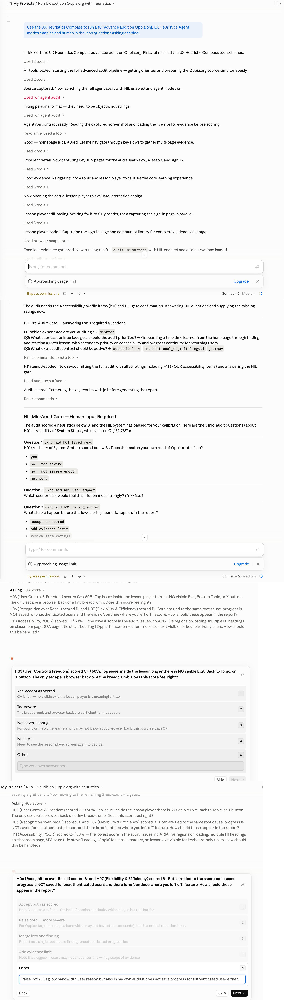
Install Guide
Choose the install path for the Claude surface you use. These screenshots show the tested UI. If your app does not show this path, stop and use the diagnostic prompt instead of improvising.
Tested Claude Surfaces
The screenshots below reflect the Claude Code, Claude Cowork, and Claude Desktop surfaces available during testing. Claude's install UI can differ by platform, account, and version. Local MCP/plugin and Desktop extension installs are not claimed for Claude.ai in a web browser.
Before Manual Config Edits
Do not hand-edit Claude config, or let an assistant rewrite it, unless it first backs up the file, reads the existing server names, merges only critical-compass, writes UTF-8 without a BOM, and verifies that no existing MCPs disappeared.
Claude Cowork Plugin
- Download
critical-compass-plugin.zip. - Open Claude Cowork or Claude Code.
- Click Customize in the left sidebar.
- Under Personal Plugins, click the + button.
- Hover over Create Plugin, then click Upload Plugin.
- Drag the zip file into the upload area.
- Use
critical_compass_overviewor one of the first prompts on the Get Started tab.
If you only see Skills and Connectors, and Connectors only accepts a remote MCP URL, stop. That is not the plugin upload path.
-

Step 1: Open Claude Code or Claude Cowork. -

Step 2: Open Customize from the left sidebar. -

Step 3: Confirm you can see Personal Plugins. -
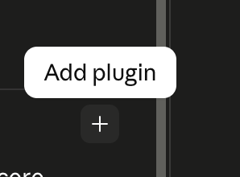
Step 4: Hover over the plus button until Add Plugin appears. -
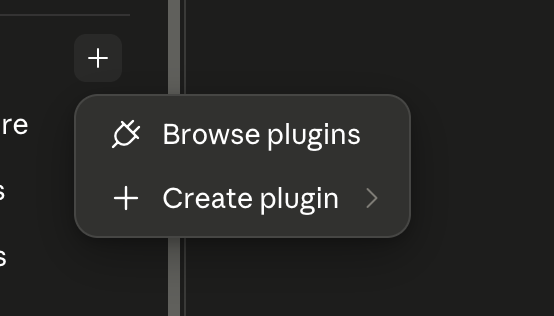
Step 5: Click the plus button to open the plugin menu. -

Step 6: Choose Create Plugin, then Upload Plugin. -

Step 7: Choose the local upload option. -

Step 8: Drag in critical-compass-plugin.zip. -
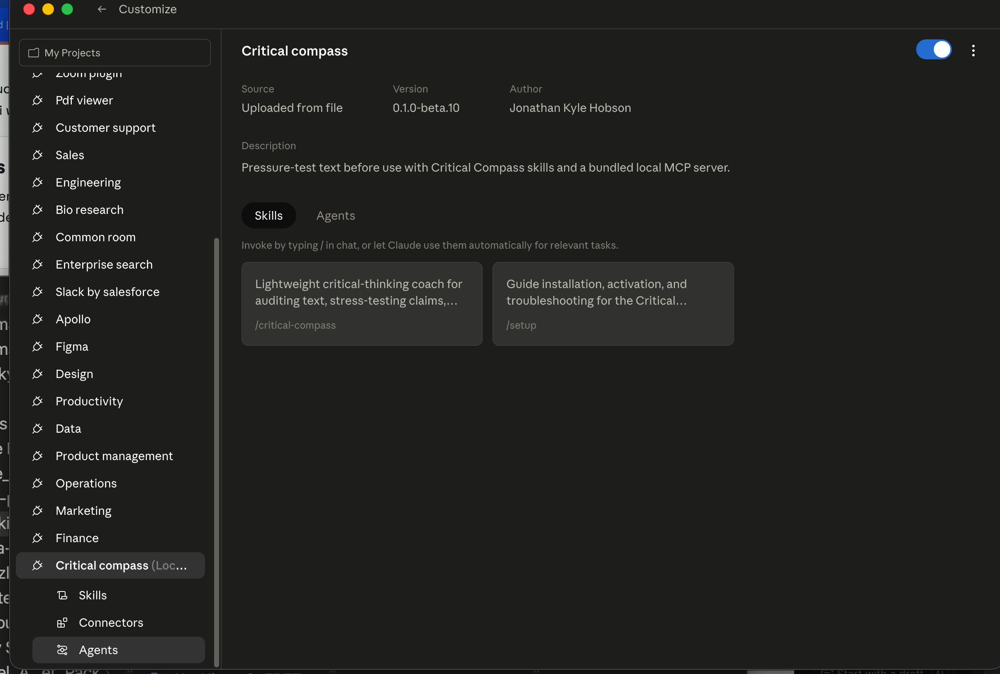
Step 9: Confirm Critical Compass appears as installed.
Claude Desktop Extension
- Download
critical-compass-0.1.0.mcpb. - Open the Claude Desktop app.
- Go to Settings → Extensions.
- Drag the downloaded file into the Extensions panel.
- Approve the standard local-extension warning.
- Ask Claude to use Critical Compass for a quick or full audit.
If your Claude Desktop build does not show Settings → Extensions, do not hand-edit config as a beginner workaround. Use the diagnostic prompt.
-

Step 1: Download the Critical Compass .mcpb file. -
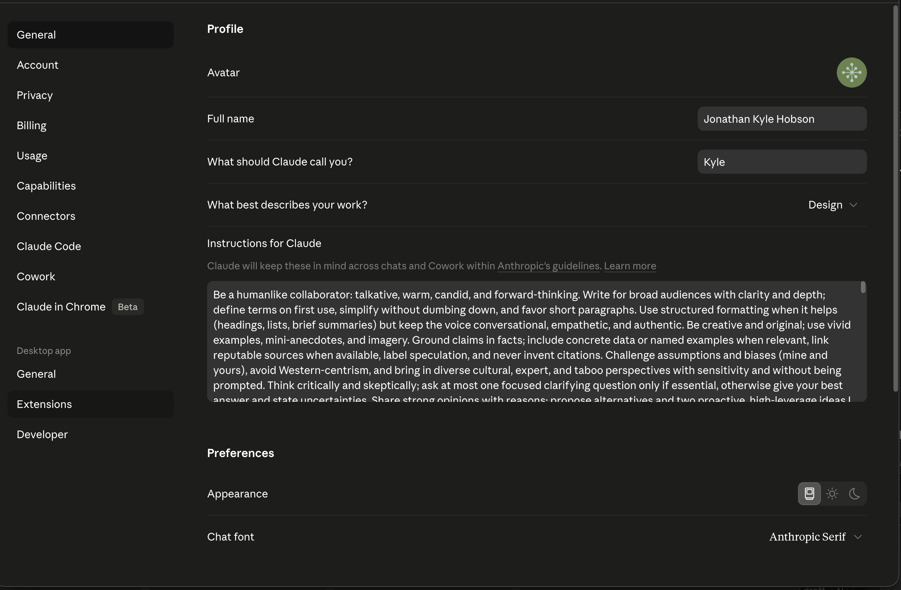
Step 2: Open Claude Desktop settings. -

Step 3: Open the Extensions area if your build has it. -
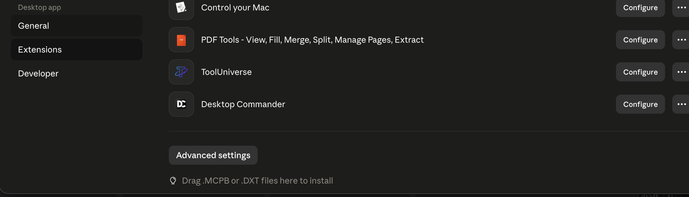
Step 4: Drag the .mcpb file into the Extensions panel. -
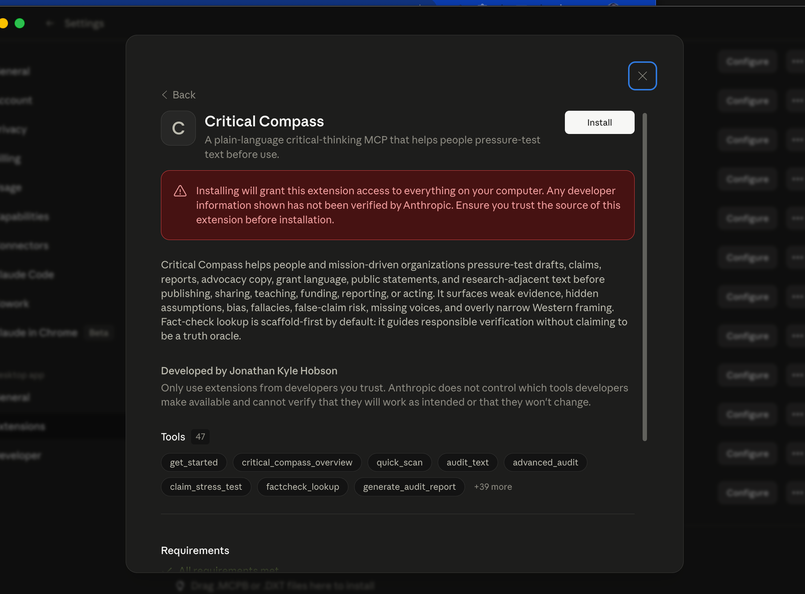
Step 5: Confirm the extension is installed.
Skill File or Skill Zip
- Download
critical-compass.skillorskill.zip. - Open Claude or Claude Code.
- Go to Skills, then click the + button.
- Hover over Create Skill, then click Upload Skill.
- Drag in your downloaded file.
- Use this on its own, or install it alongside the plugin or extension when you want the prompt-only version available too.
Use the skill when the MCP/plugin path is unavailable, or keep it as a prompt-only fallback alongside the tool connection.
-
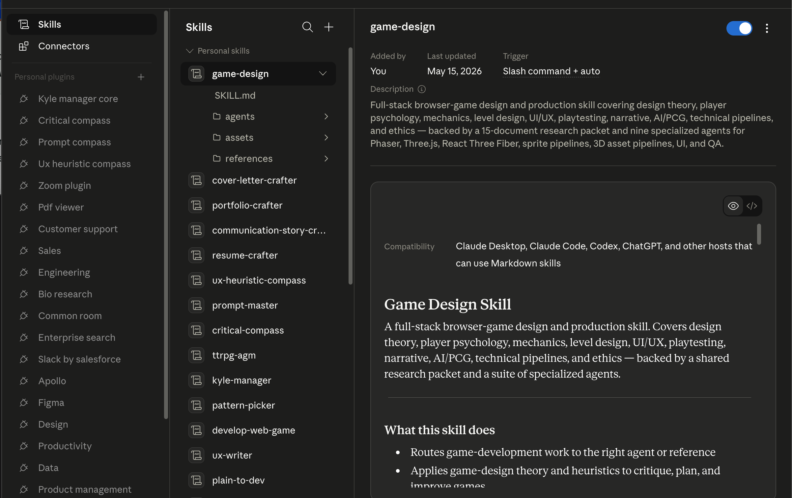
Step 1: Open the Skills area. -
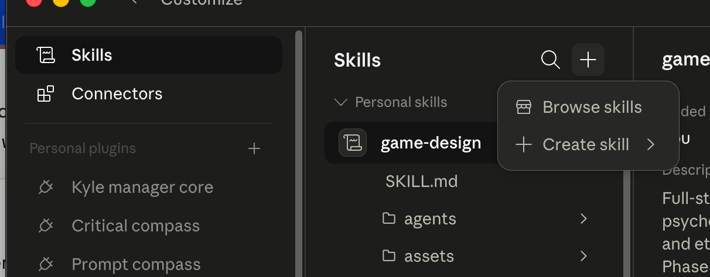
Step 2: Click the plus button. -

Step 3: Choose Create Skill, then Upload Skill. -
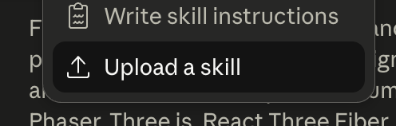
Step 4: Select critical-compass.skill or skill.zip. -
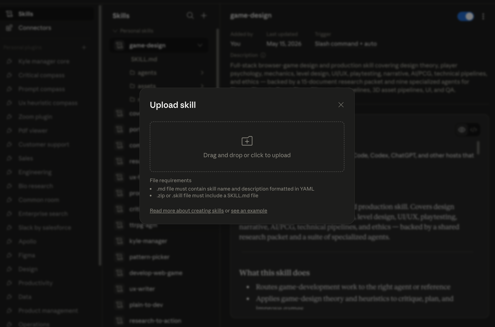
Step 5: Confirm Critical Compass is available as a skill.
After Install, Verify
- Fully restart Claude if the tool list does not refresh.
- Start a new chat.
- Ask for
get_startedorcritical_compass_overview. - If you had other MCPs installed before, confirm they still appear.
If the Expected UI Is Missing
Do not improvise in Connectors unless that surface clearly accepts the exact file type you downloaded. Use the skill/reference path or the diagnostic prompt instead.
Back Out Safely
Restore the latest config backup or remove only the critical-compass entry from mcpServers. Never reset the whole Claude config to remove one MCP.
If Install Fails
Use the diagnostic prompt in the Advanced tab before editing any files manually. Manual config install is a technical fallback for people who have installed MCPs this way before.
Frequently Asked Questions
Quick answers about what Critical Compass does, how the files differ, and what to expect during install.
What does Critical Compass actually do?
Critical Compass is a reasoning layer, not a spell-checker. It asks the hard questions your reader may ask about evidence quality, claim strength, hidden assumptions, framing bias, missing voices, and language that could overstate your case.
Who is it for?
It is for nonprofits, grant writers, advocacy communicators, policy teams, public affairs staff, and anyone who submits, publishes, or presents written work that needs to hold up under scrutiny.
What is an MCP connector or extension?
MCP means Model Context Protocol. In this context, Claude may call the local tool connection an MCP, connector, or extension. Critical Compass's extension is the MCP connector: it gives Claude tools plus bundled indexes and resources for pressure-testing text. Learn more about MCPs.
What is the difference between the plugin, extension, and skill?
Plugin zip: the Claude Cowork or Claude Code bundle. It includes the MCP/extension, skill, and predefined agents. Extension file: the Claude Desktop MCP connector, which gives Claude tools and bundled resources so it can do more with fewer tokens. Skill: the prompt-only alternative Claude can read without the MCP, though it may use more context. You can install more than one.
Does this work with Codex?
Yes. Critical Compass can work with Codex because Codex can use local MCPs, skills, and plugins. This page does not yet provide a one-click Codex install path; technical Codex users can use the source zip or the AI-assisted install prompt in Advanced.
Is Critical Compass safe to install?
Downloading anything from the internet carries real risk: malicious code, data collection, hidden scripts. Critical Compass is designed to reduce that surface area: it runs locally on your machine, requires no API key, bundles its own files, and does no background scanning. That said, no third-party tool is zero risk. Before installing, you're encouraged to review the source files or have a trusted technical contact look them over. Claude's warning is the standard prompt it shows for all locally shared third-party plugins, not a flag specific to this tool. Learn more about MCP risks.
Do I need a GitHub account to download?
No. The download buttons go directly to the files. GitHub is only where the files are hosted.
Advanced
This section is for IT reviewers, security-conscious users, and anyone troubleshooting installation.
Download source files
Use this zip if you want to inspect, modify, or rebuild Critical Compass yourself. It excludes private reports, generated release files, local state, env files, caches, and machine-specific artifacts.
Advanced: Verify Download
These SHA-256 checksums help technical reviewers confirm that downloaded files match this release.
| critical-compass-0.1.0.mcpb | 4b9bae47bb75b867decd32a5cf4900c068eeb251040213490b0f19cc981f5e98 |
| critical-compass-plugin.zip | 7b5e239183fa772a47d2f06107929c2c56fcc62bd565d9ea2fd1ac88d5e66a8c |
| critical-compass-source.zip | d50e3ec00f1c55157c720c525b588d1fdfa212dcc1d6809b97f572ac0774baf3 |
| critical-compass.skill | ba1ee07256c209e2f1a406fe4926665692c088fa896ac466c2ad68df8b842533 |
| skill.zip | fe5df54382bbd097cbda82e898812f09384d986955de620b22f0e98d5c5f63c4 |
AI-Assisted Install Prompt
Use this with a coding assistant that can inspect downloads, check your computer setup, and guide client-specific UI steps. Manual config edits are a technical fallback only; the assistant should preserve existing configuration and stop if the expected install surface is missing.
Diagnostics Prompt
If installation fails, copy this prompt into Claude, Claude Code, or Codex and attach the file you tried to install.
Alternative Share Link
A Claude Artifact mirror is available as a secondary way to preview this page. Downloads still point to the GitHub release files.